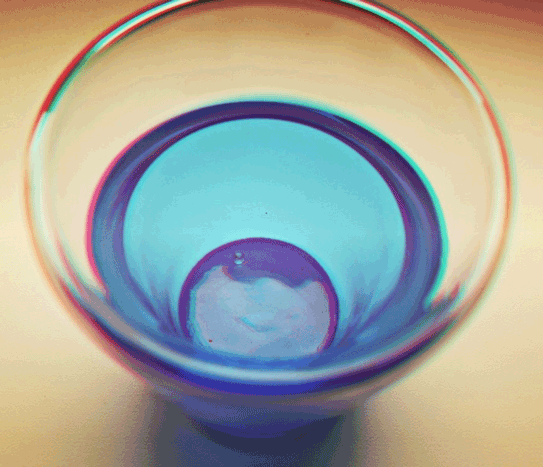

Как работает очистка в Crystal Water: обзор наших систем фильтрации
Мы часто слышим фразу «чистая вода», но что это значит на самом деле? В Crystal Water мы считаем, что чистота должна быть прозрачной — и в буквальном, и в переносном смысле. Поэтому мы открываем вам «внутреннюю кухню» нашего производства.
Наш стандарт: 8 ступеней абсолютной чистоты
Мы не используем один фильтр. Ваша вода проходит через сложный технологический конвейер, где каждый этап решает свою задачу:
- Механическая фильтрация. Удаление песка, ржавчины и крупных частиц.
- Сорбционная очистка (Уголь). Удаление хлора, органики и неприятных запахов.
- Умягчение. Снижение концентрации солей жесткости для предотвращения накипи.
- Обратный осмос (Сердце системы). Прохождение через мембрану, которая отсекает 99% всех загрязнений, включая вирусы.
- Пост-минерализация. Возврат в воду необходимых минералов для вкуса и здоровья.
- УФ-стерилизация. Уничтожение остаточных микроорганизмов ультрафиолетом.
- Озонирование. Финальная стерилизация и насыщение кислородом.
- Контроль качества. Каждая партия проходит проверку перед розливом.
Почему это лучше, чем домашний фильтр?
Даже самый дорогой домашний фильтр не может обеспечить такой уровень контроля. Мы используем промышленное оборудование, которое:
- Работает с огромным давлением (что критически важно для осмоса).
- Регулярно проходит технический аудит и замену элементов.
- Гарантирует одинаковое качество каждой капли в каждой бутыли.
Убедитесь в качестве лично
Попробуйте воду, которая прошла через 8 ступеней очистки. Закажите доставку Crystal Water и почувствуйте разницу в каждом глотке.
Заказать воду эталонной чистоты